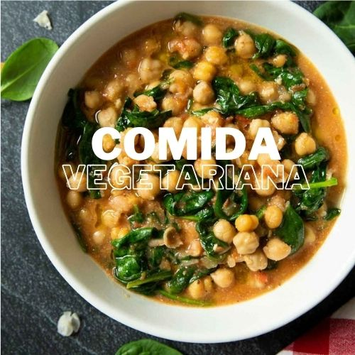

Ingredientes
1 lata de garbanzos, escurridos y enjuagados
2 tazas de espinacas frescas
1 cebolla, picada
dientes de ajo, picados
1 lata de tomate triturado
1 cucharadita de comino
2 cucharadas de aceite de oliva
Sal y pimienta al gusto
Instrucciones
En una sartén grande, calienta el aceite de oliva y añade la cebolla.
Sofríe hasta que esté dorada.
Agrega el ajo y cocina por 1 minuto más.
Añade los garbanzos, el tomate triturado, el comino, la sal y la pimienta.
Cocina a fuego lento durante 10 minutos.
Agrega las espinacas y cocina hasta que se marchiten. Sirve caliente.